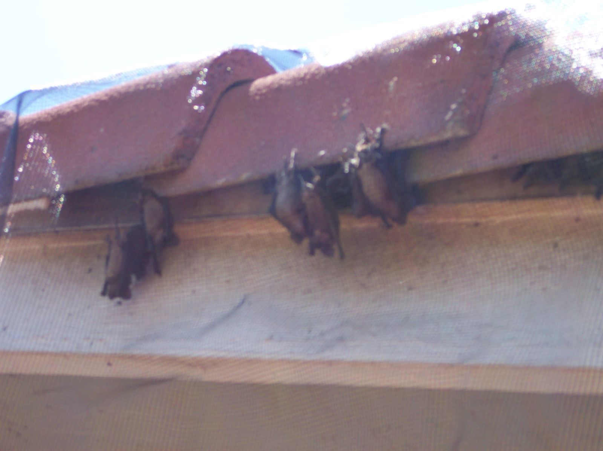
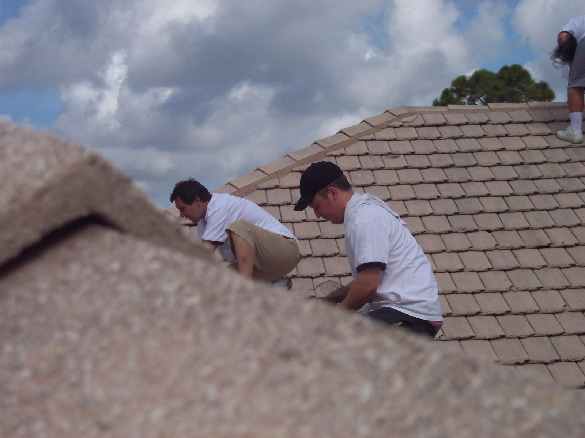
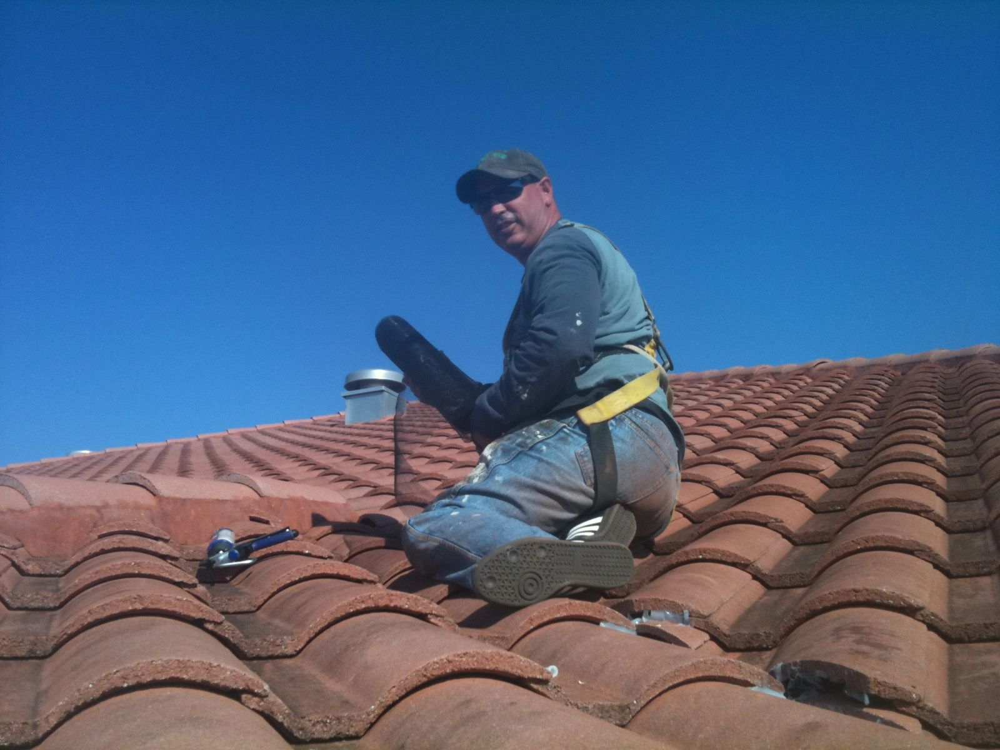
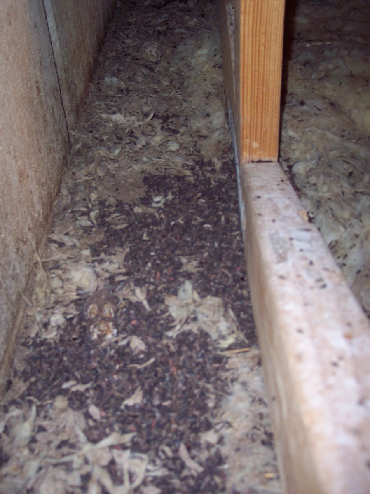
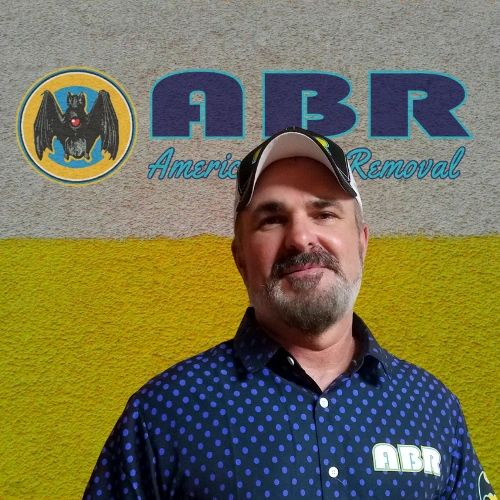
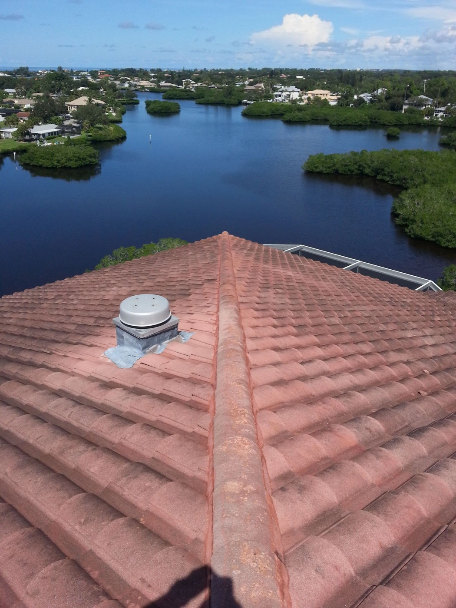
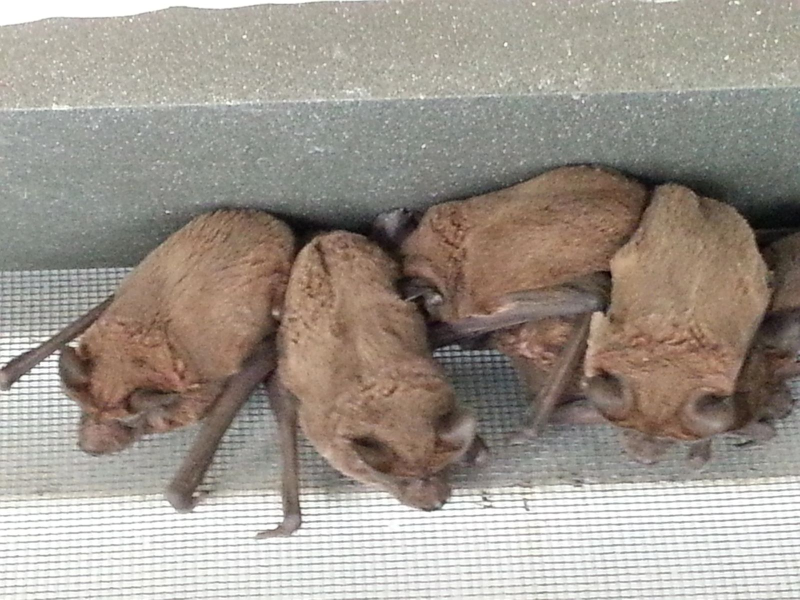
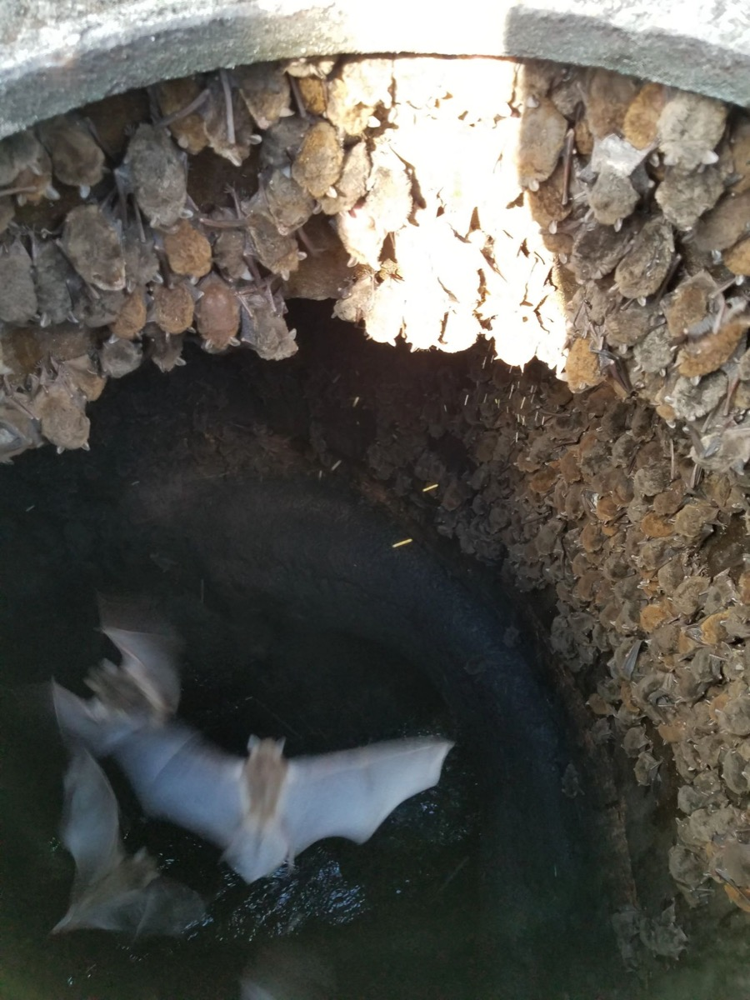
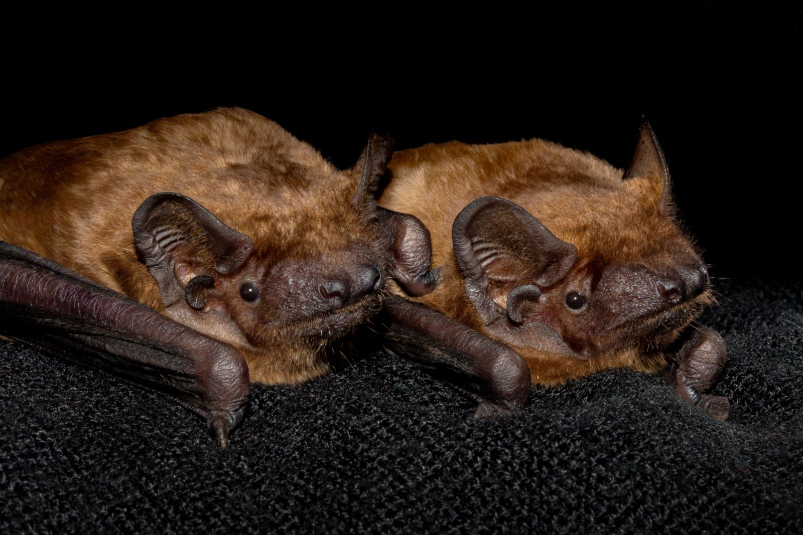
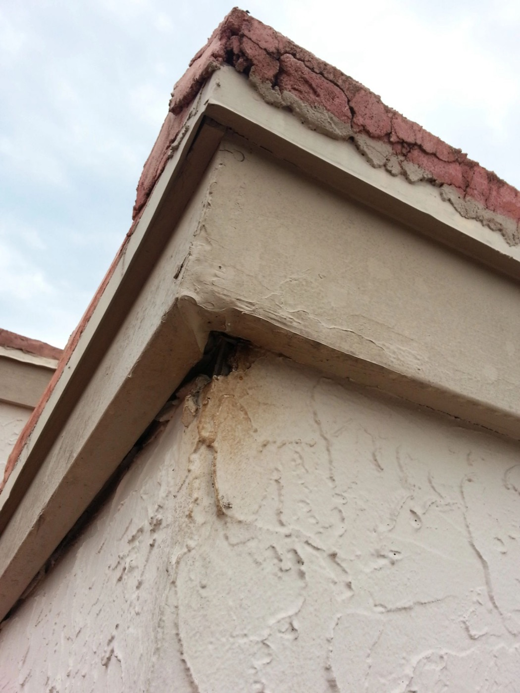

Bat Exclusion & Removal
Humane exclusion methods designed to allow bats to leave a building while preventing reentry.
Learn MoreHumane bat exclusion, attic cleanup, entry-point sealing, and long-term prevention for your home or business. Serving Volusia County and surrounding areas.
American Bat Removal specializes exclusively in bat-related problems.
From inspecting your property and identifying entry points to humane exclusion and cleanup, we provide solutions designed to help keep bats out of your home.
Talk to a Specialist
Routine exclusion is restricted April 16 through August 14. Special authorization is required for exclusion during this period.
We focus on methods that allow bats to leave structures without harming them.
Specializing in bat-related inspections, exclusion, cleanup, and prevention.

Humane exclusion methods designed to allow bats to leave a building while preventing reentry.
Learn More
Identify and seal potential entry points to help prevent bats from getting back inside.
Learn More
Address bat droppings, contaminated insulation, and affected attic materials when necessary.
Learn MoreWe inspect your property to identify bat activity, possible entry points, and the scope of the problem.
We develop a tailored exclusion and prevention strategy for your specific property.
When legally permitted, we use appropriate methods that let bats leave while preventing reentry.
We address entry points and recommend appropriate cleanup and prevention measures.

Established in 2004, American Bat Removal focuses on helping property owners solve bat-related problems.
Serving Volusia County and surrounding communities with bat inspections, exclusion, and prevention services.

Estimate fees are determined by distance from our office. Bat removal and cleanup project costs are quoted separately after assessing the property.
Estimate
Estimate
Estimate
Plus $1 per mile beyond 100 miles

Learn about Florida's bat species and their importance to the ecosystem.

Bats help control insect populations and play important ecological roles.

Understand Florida's seasonal exclusion restrictions and protections for young bats.

Discover common entry points around soffits, vents, and roofline gaps.
Bats repeatedly emerging from the same roofline or opening around sunset.
Chirping, scratching, or movement in attic spaces, especially around dusk or dawn.
Small, dark droppings around roosting areas, attic spaces, or building openings.
Dark marks near soffits, vents, or openings that bats may be using.
Common signs include bats emerging at dusk, scratching noises, droppings, and staining near entry points.
Florida restricts routine bat exclusion during maternity season, April 16 through August 14. Exclusion during this period requires applicable authorization.
No. American Bat Removal specializes exclusively in bats.
Project pricing depends on the structure, entry points, accessibility, exclusion requirements, and cleanup needs.
Proper exclusion and sealing of entry points can substantially reduce the likelihood of bats returning through those openings.
Request an inspection and tell us what you've noticed at your property.
Find out if you have bats and get a plan to help keep them out.